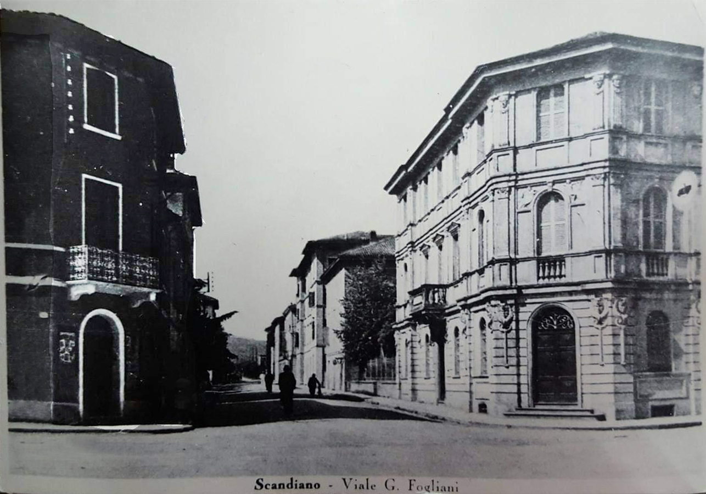

TAPPA 1: Via Vallisneri 12, angolo via Fogliani
1.1 - Umberto Romoli
1.2 - Ovidio Beucci

Qui, il 13 novembre 1922, una quindicina di giorni dopo la marcia su Roma e la presa del potere violenta da parte di Mussolini, venne aggredito e assassinato dai fascisti UMBERTO ROMOLI, già assessore della giunta comunale socialista guidata dal Sindaco Luigi Ghiacci.
Dopo l'assalto al Municipio dell'agosto 1922 e la cacciata dell'amministrazione socialista, Romoli, pur minacciato e aggredito più volte, aveva scelto di non andarsene da Scandiano: aveva un bambino piccolo, Romolo, e la moglie Clementina Bertolani era in attesa della loro bambina, Mara, che nascerà dopo la morte del padre. Umberto visse in clandestinità per qualche settimana nascondendosi sulle colline tra San Ruffino e Ventoso, ospitato da contadini che con lui condividevano l'opposizione al fascismo, poi riprese la sua vita alla luce del sole, pensando che il pericolo fosse passato. Aveva come unica colpa quella di essere socialista e di non farne mistero, e di essere stato eletto dai cittadini scandianesi nelle ultime elezioni amministrative del 1920.
Erano i mesi degli assalti ai municipi e alle cooperative, delle aggressioni e della cacciata violenta di sindaci e di assessori democraticamente eletti, in quel clima Umberto Romoli fu aggredito in pieno centro e in pieno giorno da Marino Bottazzi, segretario del Fascio scandianese, insieme al fratello Pellegrino Bottazzi e ad Argo Signori.
Per sfuggire alle botte, Romoli si rifugiò nell'androne dove si trovava lo studio fotografico “Brugnoli”. Pellegrino Bottazzi sparò e i proiettili raggiunsero Romoli attraverso il portone di legno, uccidendolo.
Gli autori dell'aggressione, riconosciuti da numerosi presenti al fatto, furono processati e assolti, come avveniva spesso in quei tempi bui, e addirittura portati in trionfo per le vie di Reggio Emilia. I testimoni, intimiditi, non si presentarono a deporre.
Nel novembre 2022, ANPI Scandiano, Istoreco e Comune di Scandiano hanno ricordato Umberto Romoli collocando una targa commemorativa sulla casa di famiglia a San Ruffino, in via Rio Riazzone, dove tutto è rimasto com'era allora e dove ancora il ritratto di Umberto è affisso alla parete, accanto a quello della moglie.
Ancora qui, 22 anni dopo, il 1° maggio 1944 alcuni militi della Brigata Nera arrestarono nella sua casa e uccisero sul posto OVIDIO BEUCCI, nome di battaglia “Marco” o “Mirco”, motorista e disegnatore tecnico presso le Officine Meccaniche Reggiane, dove si producevano in quegli anni aerei da guerra.
Ovidio era uno dei militanti comunisti che organizzavano azioni di resistenza, di sabotaggio e di mobilitazione in fabbrica, finalizzate a preparare l’insurrezione operaia contro il fascismo che aveva trascinato l'Italia in guerra e che, alleandosi con i nazisti, era corresponsabile dell'occupazione tedesca del nostro Paese.
Per il 1° maggio di quell’anno vennero diffusi, sui luoghi di lavoro e fra i cittadini, volantini clandestini che invitavano alla lotta contro il regime fascista. Pensando al futuro, a un dopoguerra che si sperava ormai vicino, su quei volantini c'era scritto, tra l'altro:
“L'Italia nella futura Società, avrà il posto che le appartiene a condizione che essa porti alla lotta il proprio contributo, ed è in misura dei nostri sforzi e dei nostri sacrifici che noi potremo rivendicare con dignità i nostri diritti”.
A Ovidio Beucci fu intitolato un distaccamento partigiano della 26ª Brigata Garibaldi.
N.B. alcune ricostruzioni collocano la sua uccisione al 4 o al 5 maggio 1944.
Dopo l'assalto al Municipio dell'agosto 1922 e la cacciata dell'amministrazione socialista, Romoli, pur minacciato e aggredito più volte, aveva scelto di non andarsene da Scandiano: aveva un bambino piccolo, Romolo, e la moglie Clementina Bertolani era in attesa della loro bambina, Mara, che nascerà dopo la morte del padre. Umberto visse in clandestinità per qualche settimana nascondendosi sulle colline tra San Ruffino e Ventoso, ospitato da contadini che con lui condividevano l'opposizione al fascismo, poi riprese la sua vita alla luce del sole, pensando che il pericolo fosse passato. Aveva come unica colpa quella di essere socialista e di non farne mistero, e di essere stato eletto dai cittadini scandianesi nelle ultime elezioni amministrative del 1920.
Erano i mesi degli assalti ai municipi e alle cooperative, delle aggressioni e della cacciata violenta di sindaci e di assessori democraticamente eletti, in quel clima Umberto Romoli fu aggredito in pieno centro e in pieno giorno da Marino Bottazzi, segretario del Fascio scandianese, insieme al fratello Pellegrino Bottazzi e ad Argo Signori.
Per sfuggire alle botte, Romoli si rifugiò nell'androne dove si trovava lo studio fotografico “Brugnoli”. Pellegrino Bottazzi sparò e i proiettili raggiunsero Romoli attraverso il portone di legno, uccidendolo.
Gli autori dell'aggressione, riconosciuti da numerosi presenti al fatto, furono processati e assolti, come avveniva spesso in quei tempi bui, e addirittura portati in trionfo per le vie di Reggio Emilia. I testimoni, intimiditi, non si presentarono a deporre.
Nel novembre 2022, ANPI Scandiano, Istoreco e Comune di Scandiano hanno ricordato Umberto Romoli collocando una targa commemorativa sulla casa di famiglia a San Ruffino, in via Rio Riazzone, dove tutto è rimasto com'era allora e dove ancora il ritratto di Umberto è affisso alla parete, accanto a quello della moglie.
Ancora qui, 22 anni dopo, il 1° maggio 1944 alcuni militi della Brigata Nera arrestarono nella sua casa e uccisero sul posto OVIDIO BEUCCI, nome di battaglia “Marco” o “Mirco”, motorista e disegnatore tecnico presso le Officine Meccaniche Reggiane, dove si producevano in quegli anni aerei da guerra.
Ovidio era uno dei militanti comunisti che organizzavano azioni di resistenza, di sabotaggio e di mobilitazione in fabbrica, finalizzate a preparare l’insurrezione operaia contro il fascismo che aveva trascinato l'Italia in guerra e che, alleandosi con i nazisti, era corresponsabile dell'occupazione tedesca del nostro Paese.
Per il 1° maggio di quell’anno vennero diffusi, sui luoghi di lavoro e fra i cittadini, volantini clandestini che invitavano alla lotta contro il regime fascista. Pensando al futuro, a un dopoguerra che si sperava ormai vicino, su quei volantini c'era scritto, tra l'altro:
“L'Italia nella futura Società, avrà il posto che le appartiene a condizione che essa porti alla lotta il proprio contributo, ed è in misura dei nostri sforzi e dei nostri sacrifici che noi potremo rivendicare con dignità i nostri diritti”.
A Ovidio Beucci fu intitolato un distaccamento partigiano della 26ª Brigata Garibaldi.
N.B. alcune ricostruzioni collocano la sua uccisione al 4 o al 5 maggio 1944.